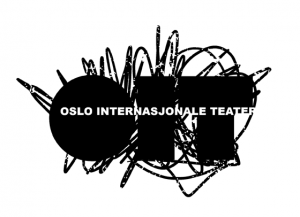

Leserom med OIT: The Death of the Last Black Man (...), av Suzan-Lori Parks - AVLYST
- Kategori:
- Kurs og workshops
Kurs og workshops
Åpent for profesjonelle skuespillere, dvs. treårig utdanning i skuespillerkunst eller tilsvarende profesjonell erfaring. - Dato:
- 27.11.2015 til 27.11.2015
- Start kl :
- 11:00
- Slutt kl :
- 16:00
- Pris:
- 300,-
- Adresse:
- Norsk Skuespillersenter, Welhavensgate 1, Oslo
Leserom er et konsept der 10 skuespillere og en regissør bruker en dag på å dykke ned i en ny, norsk eller internasjonal scenetekst. Sammen leser de stykket og diskuterer teksten. En uformell og avslappet måte å utforske dramatikk på. Deltakerne får et eksemplar av boken inkludert i kursavgiften.
{kind=link}
 Om Suzan-Lori Parks
Om Suzan-Lori Parks
Suzan-Lori Parks (født 1963) er kanskje USAs fremste nålevende avant-gardistiske dramatiker, men hun er i stor grad ukjent i Europa. Den afro-amerikanske forfatteren, oppvokst delvis i vest-Tyskland, skriver både for scene og film. Hun mottokk MacArthur Foundation Genius Grant i 2001 og har vunnet flere Obie-awards for stykkene sine. I 2002 fikk hun den høythengende Pulitzerprisen for skuespillet Topdog/Underdog. Andre verk inkluderer Fucking A, Venus, og Girl 6 (film, regi Spike Lee).
Om The Death of the Last Black Man in the Whole Entire World
Suzan-Lori Parks skuespill fra 1990 bruker et fragmentert, referanserikt, repeterende og eksperimentelt jazz-aktig språk for å gi scenisk form til en meditasjon over stereotyper og kollektive minner, som på ubehagelig vis reflekterer over afro-amerikanernes historie. Til å lede Leserommet har Øystein med seg den britisk-karibiske poeten Leeanne Stoddart.
Om OIT
{kind=link}
Oslo Internasjonale Teater gjør iscenesatte lesinger av internasjonal samtidsdramatikk. Prosjektet har samarbeidet med Det Norske Teatret, Dramatikkens hus og Nordic Black Theatre og vært involvert i EU-prosjektet Theatre Café Festival. I 2011 vant OIT Heddapris for Særlig kunstnerisk innsats.
 Om Øystein U. Brager
Om Øystein U. Brager
Øystein Ulsberg Brager er frilans sceneinstruktør, og har hatt regien på stykker som Frankenstein ved Nordland Teater, Journey to the East, Krigsfortellinger, Kinder K m.fl. Han er også kunstnerisk leder for det internasjonale teaterkompaniet Imploding Fictions som blant annet står bak det Heddaprisvinnende prosjektet Oslo Internasjonale Teater.
{kind=link}
Leeanne Stoddart er poet, skribent og blogger (du kan lese bloggen Where are you really from? på http://leeannestoddart.com). Hun har har opptrådt med egne dikt i en lang rekke år, i USA, Storbritannia og Norge. Hun skrev og framførte soloforestillingen Tongue-Tied i 2009 og ga ut diktsamlingen Unrealistic Expectations i 2011. Hun er 3. generasjons jamaicansk innvandrer i Storbritannia, 2. generasjons britisk innvandrer i USA og 1. generasjons britisk-karibisk innvandrer i Norge.
Pris for medlemmer av NSF: 250,-